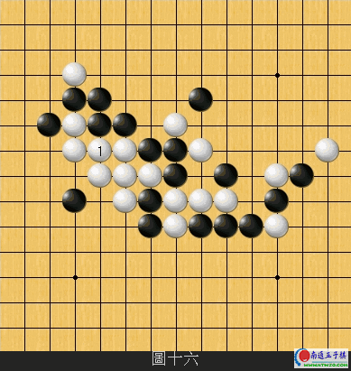

最近这里美文太多了，发个和五子棋有关的文章：五子人生
#1 最近这里美文太多了，发个和五子棋有关的文章：五子人生 作者：蓝天蓝 发表时间：2011-7-14 7:10:42
最近这里美文太多了，发个和五子棋有关的文章
五子人生
原文由海豚发表在QQ空间

棋道即人道，棋理即事理。下棋的原则和技巧其实就是我们做人做事的原则和技巧。每种棋都有其鲜明的特征：围棋即军事，象棋即政治，而五子棋是人生，是我们的工作和生活。生在和平年代，长于经济浪潮。
如果自己是进攻方，要时刻掌握主动权，先行争夺，地破天惊。对方防不胜防，最后完胜。如果是自己是守方，要时刻牢记：“最强的防守就是进攻。”等待对方出错的过程仔细分析局势，你会发现，以守转攻的机会来了。
我们做的任何事都是这样，如果想把事情做好，就要把该事涉及到的每个环节理清，每一步都做到可控，有基本措施，有辅助措施，还有应急方案。就算做不彩来，也不会差到哪去。凡是把事情做糟糕了，一定是哪个环节，你事先没搞明白，该明确的没有明确，该清晰的没有清晰，该细化的没有细化。如此做事，焉能不糟。应牢记：凡事做到可控，无忧矣！
#2 Re:最近这里美文太多了，发个和五子棋有关的文章：五子人生 作者：掌棋如烟 发表时间：2011-7-14 8:52:47
QQ空间的图片不能外链的,另存在电脑上然后上传到爱五子棋,不过对这篇文章来说图片不重要#3 Re:最近这里美文太多了，发个和五子棋有关的文章：五子人生 作者：小丸.net 发表时间：2011-7-14 9:30:59
不会发图的MM伤不起啊。
#4 Re:Re:最近这里美文太多了，发个和五子棋有关的文章：五子人生 作者：掌棋如烟 发表时间：2011-7-14 9:52:12
引用：
原文由 小丸.net 发表于 2011-7-14 9:30:59 :不会发图的MM伤不起啊。
蓝MM发过很多图了,你也太不注意人家了,这篇没图我宁愿相信她是懒了一下,毕竟这贴文字才是主要的
［ 被感动的人 于 2011-7-14 11:04:40 时花20金币送鲜花一朵］
［ 蓝天蓝 于 2011-7-14 11:06:04 时花20金币送鲜花一朵］
#5 Re:最近这里美文太多了，发个和五子棋有关的文章：五子人生 作者：没谱的人 发表时间：2011-7-14 10:17:51
好文章需要顶一下！！！#6 Re:最近这里美文太多了，发个和五子棋有关的文章：五子人生 作者：蓝天蓝 发表时间：2011-7-14 10:56:02
哎，又烦错误了，懒一点就是不行，55555
#7 Re:Re:最近这里美文太多了，发个和五子棋有关的文章：五子人生 作者：蓝天蓝 发表时间：2011-7-14 10:59:25
引用：哎，连字都写错了
原文由 蓝天蓝 发表于 2011-7-14 10:56:02 :哎，又烦错误了，懒一点就是不行，55555
#8 Re:Re:最近这里美文太多了，发个和五子棋有关的文章：五子人生 作者：蓝天蓝 发表时间：2011-7-14 11:09:34
引用：没有什么，俺以后吸取教训，不敢懒了
原文由 小丸.net 发表于 2011-7-14 9:30:59 :不会发图的MM伤不起啊。

#9 Re:最近这里美文太多了，发个和五子棋有关的文章：五子人生 作者：以和为贵 发表时间：2011-7-14 18:02:27
世事如棋局局新，人生如弈步步禅。
［ 蓝天蓝 于 2011-7-14 18:10:59 时花20金币送鲜花一朵］
#10 Re:最近这里美文太多了，发个和五子棋有关的文章：五子人生 作者：黄启超 发表时间：2011-7-14 18:41:09
棋盘纵横十五道直线
225个眼点
196个方格
眼点、方格里
潜存
无数的玄机
要是
棋盘上没有边沿线的限制
那么
黑白二色的智慧
布满了整个世界
棋子
不声不响
线条
规矩而又呆板
没有
一点动漫的感觉
仿佛失去了生气
一旦黑白棋子
在棋盘上落子生根
一个死沉沉的线眼中
就注入了鲜活的生命
赋予运动画面的神秘
动画在恒常世界之外
创造了一个自主自由的幻想空间
它可以智慧我们的心底
愉悦我们的感官
容纳我们的精神
它既是在冰天雪地的季节里
也能
让思念的季节运作飞扬
四子一线的寂寞凝思
双三封杀的勾心斗角
强四活三的经天纬地
线线相交
子子相连
无不张扬
棋盘上的星星点点
无不静守
心灵上的黑黑白白……
将遇良才
棋逢对手
黑白二子
明了不过的对弈
有限的疆界上
走出无限的
绝妙的车辙
感叹
棋盘的博大精深
鬼神莫测的落点
令人目眩的格杀
妙趣横生的步法
落子成势的自信
演绎着
令人信服的得失
虽说是棋盘上的技艺
却也是生活中常遇的道理
人生如棋
棋如人生
在棋盘上
可以步步计算
获得的原则
或许非常简单
你可能采用了某条原则
但结果却成了败局……
虚虚实实
变化莫测
少可以为多
退可以为进
慢可以为快
棋手不是对的
就是错的
是游戏
是现实
充满竞争的社会里
看似简单的东西
其实不易
这就需要我们有竞争的意识
做好输赢的准备
棋输子在
可是在现实生活中
多少人生成败
都是由竞争的胜负来决定的
同样
历史上许多伟大的战役
也是胜负的必然结果
闲暇时
我持有QQ号
进入五子棋游戏大厅
戏游五子棋
子起子落
线线期待的张望
点点凝重的抉择
收拾棋盘上的岁月
尘埃人生上的历练
感悟平凡与超越
虽说我是九段身位
也不敢说
网上一刀
孤独求败
因为
在千变万化的棋局里
只有走到定局
才能
托付棋盘上有限疆界的无限思念
五子棋
易学易懂
有利于培养思想品德
棋规里
要求着棋者讲究礼仪
落子无悔
可以养成一些好习惯
培养竞争的意识
磨练意志
接受输赢的教育
着棋
有输有赢
要赢对手
就必须有强烈的取胜愿望
而且要赢得一盘棋
肯定会遇到各种各样的困难
学生在下五子棋的过程中
可以磨练意志
学会处理人际关系
在学棋过程中
不免要输棋
只有在失败中总结教训
才能提高水平
学五子棋
对智商、情商方面的开发作用
不可轻视
下五子棋的过程中
具备了人类思维的一般过程
观察、分析、推理、抉择
以五子棋
培养良好的思维习惯
特别是增强
注意力
观察力
判断力
应变力
计算力和记忆力上有很大的作用
棋如人生
人生如棋
五子棋
［ 以和为贵 于 2011-7-14 19:31:27 时花20金币送鲜花一朵］
［ 以和为贵 于 2011-7-14 19:31:39 时花20金币送鲜花一朵］
［ 以和为贵 于 2011-7-14 19:31:48 时花20金币送鲜花一朵］
［ 蓝天蓝 于 2011-7-14 19:41:23 时花20金币送鲜花一朵］
#11 Re:最近这里美文太多了，发个和五子棋有关的文章：五子人生 作者：黄启超 发表时间：2011-7-14 21:01:05
五子棋传奇
棋坛名宿天天爸爸前段时间广发英雄帖，邀请天下五子棋高手八月十五日到扬州城天波府他府上打擂比赛。你想呀！天天爸爸成名这么多年，能到他府上的寥寥无几，五子棋高手莫不以到他府上品茶论棋、吟诗作画为一大幸事，况且今年还可以一起赏月。
这等棋坛大事，多年才有一次，在各地引起了巨大轰动，到处都在谈论。五子棋爱好者更是络绎不绝，早早起程，想一睹这一盛况，希冀到时能得到这些高人指点一二，那真是三生有幸的大事。